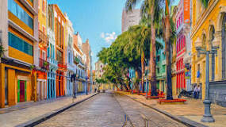
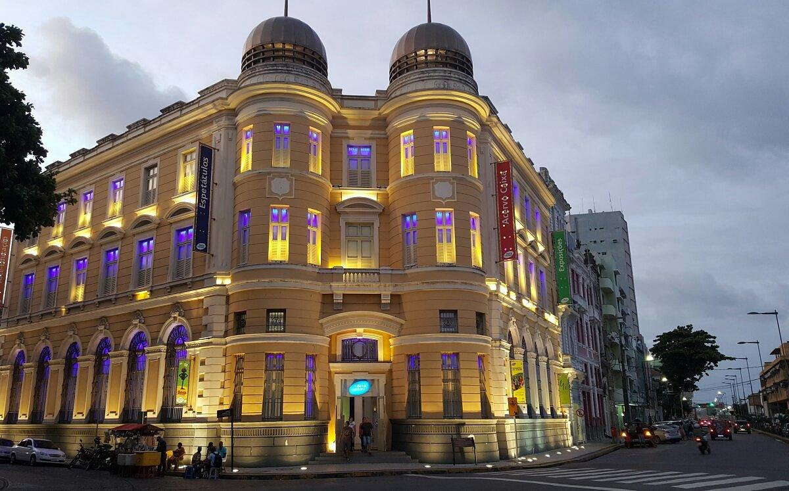

Conhece a Rua do Bom Jesus
Rua do Bom Jesus é a mais bonita do Brasil e a quarta do mundo, diz revista. A Rua do Bom Jesus também frequenta a lista anual da revista norte-americana Architectural Digest desde 2019.
A caixa Cultural do Recife
A Caixa Cultural Recife é um espaço cultural localizado na cidade do Recife, capital do estado de Pernambuco, Brasil. Integra um conjunto de sete centros culturais criados pela Caixa Econômica Federal em capitais brasileiras
